⚠️ Educational Purposes Only
This project was created purely for educational purposes to explore computer vision and real-time data processing. It was never used in actual gameplay and is not intended to provide unfair advantages.
Introduction
As a fan of both gaming and coding, I've always wanted to merge those two worlds. In League of Legends, you're constantly told to "watch the map," but during the intense laning phase, you're also juggling last-hitting, trading with your opponent, and dodging skillshots. It's easy to miss a crucial enemy rotation.
So, I decided to build myself a teammate—a bot whose only job is to stare at the minimap for me, 24/7. This project, Rift Recon, is a real-time computer vision tool I built in C++ that acts as that dedicated map-watcher. It uses OpenCV to detect and track enemy champions, then calls out their positions to an in-game overlay via a WebSocket interface.
One of the great things about working with the minimap is its static background and consistent champion icons (except for Kayn lol). That predictability meant I could skip a lot of the visual complexity found in the main game screen and focus entirely on building a fast, accurate detection pipeline. Let's dive into how I built this thing!
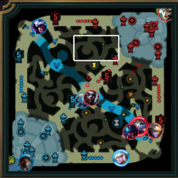
📋 Table of Contents
1. System Architecture: The Blueprint
The Rift Recon system consists of several interconnected components working together to provide real-time champion detection and tracking. The architecture was designed with modularity and performance in mind, allowing each component to be optimized independently.
To better understand the system, I'll break down the architecture into 2 different perspectives: the "macro" view and the "meso" view.
1.1 The Solution Architecture (The "Macro" View)
Initially, everything lived in one giant main.cpp file. It worked—until it didn't. As the project grew,
things got messy fast, so I restructured the system into a clean, modular design.
A Three-Project Solution
-
RiftRecon-Core: A static library (.lib) that contains the main logic—frame analysis, champion tracking, and WebSocket communication. -
RiftRecon-App: A simple executable (.exe) that initializes and runs the core system. -
RiftRecon-Tests: A separate testing suite using Google Test to validate the core library's behavior and accuracy.
This separation keeps the system organized and makes it easier to test, debug, and extend. Each project has a clear role, and the logic-heavy Core can be reused or upgraded independently of the App or Tests.
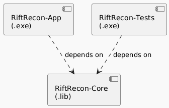
1.2 The Core Library Architecture (The "Meso" View)
Inside the "Brain" (our RiftRecon-Core library), I didn't want chaos. I used Object-Oriented Programming to assign clear roles, like assembling a team of specialists. The main boss is the ApplicationController class. It acts as the conductor of an orchestra—it doesn't play an instrument itself, but it initializes and coordinates all the other major components to make sure they work in harmony.
The biggest engineering challenge here was performance. This tool absolutely cannot cause lag mid-game. The solution was the multi-threaded GameCaptureEngine, which I designed like a two-person assembly line:
- The Watcher (Capture Thread): One thread's only job is to furiously grab frames from the screen using DirectX and drop them into a shared queue. It runs uninterrupted, ensuring we never miss a moment.
-
The Thinker (Processing Thread):
A second thread pulls frames from that queue and handles all the heavy lifting. This is where the
ChampionDetectorgets to run its OpenCV magic.
By decoupling capturing and processing, the app stays perfectly smooth. When a detection is made, the result is handed off to the WebSocketServer, which then shouts the update to the in-game overlay.
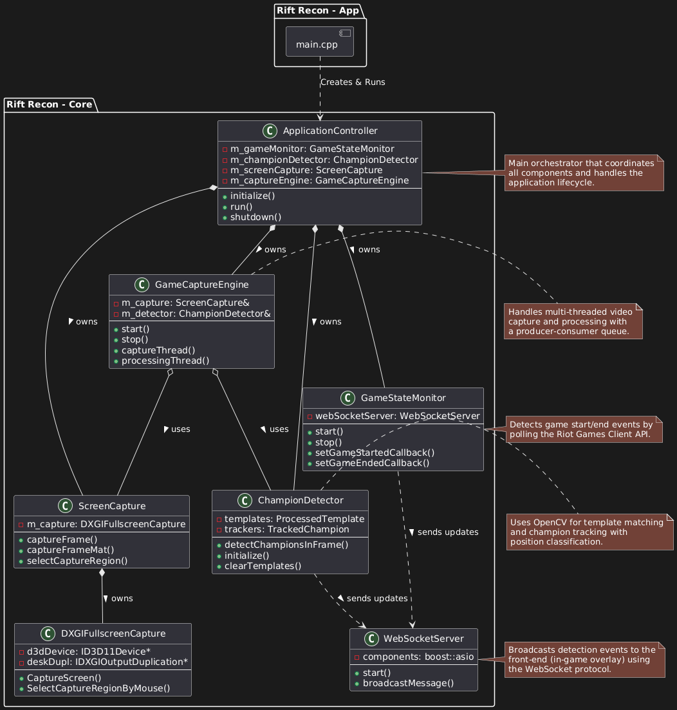
2. Frame Capturing: The Eye of the System
None of this works if you can't "see" the game. The first step is capturing the screen, and we need to do it efficiently because a slow or laggy screen capture would make the entire project useless. That's why i didn't use the builtin Opencv's VideoCapture() function (they rely on costly memory copies between the GPU and CPU for every single frame).
Instead, to achieve high-performance and low-overhead screen capture, I went straight to the source: the Microsoft DirectX Graphics Infrastructure (DXGI), specifically, I used the Desktop Duplication API. This is a powerful, modern API that lets an application directly access the GPU's frame buffer without costly CPU-to-GPU memory transfers.
Focusing on What Matters: The Minimap
Capturing the entire screen just to look at a tiny 300x300 pixel minimap would be a massive waste of resources. To solve this, the ScreenCapture module does two things:
- It allows you to select the minimap region with a simple click-and-drag interface.
- Once the region is set, every frame captured via DXGI is immediately cropped down to just that small area.
This targeted approach dramatically reduces the amount of data that needs to be processed, which is a huge performance win for the downstream detection pipeline.
The Producer-Consumer Queue
As I mentioned in the architecture section, the capture process runs on its own thread—the "Watcher." This thread's job is to feed frames to the "Thinker" (the processing thread). To do this safely and efficiently, I implemented a classic Producer-Consumer pattern.
- The Producer (Capture Thread): Captures and crops a frame, then pushes the resulting
cv::Matinto a thread-safe, buffered queue. I kept the queue size small (around 3 frames) to keep memory usage low and ensure the data being processed is always fresh. - The Consumer (Processing Thread): When it's ready for more work, it simply pulls the next available frame from the front of the queue.
This queue acts as a simple, effective buffer that decouples the two threads, allowing them to work at their own pace without ever blocking each other.
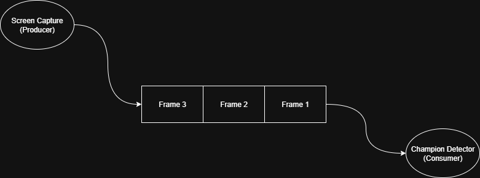
3. Frame Processing: The Brain's Workflow
Once the GameCaptureEngine hands over a fresh frame of the minimap, the real magic begins. The challenge isn't just *finding* a champion; it's finding the right champion and not getting fooled by a stray minion or visual noise. To solve this, I built a robust, multi-stage detection pipeline.
3.1 Two-Factor Authentication Detection
At its core, the detection logic is a two-step verification process to ensure we're confident in what we see. I think of it as "spotting a suspect, then checking their ID."
- The Quick Scan (Template Matching): First, the system performs a fast scan across the minimap using TM_CCORR_NORMED method (because it suports the use of masks). I use pre-loaded 30x30 pixel champion portraits, but with a trick: I apply a circular mask to each template. This forces the algorithm to focus only on the circular portrait area, ignoring noisy square corners and dramatically improving the initial match quality.
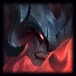
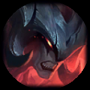
-
The "ID Check" (Histogram Validation): A shape match isn't enough. For every potential candidate, the system performs a second check. It calculates the hue histogram of the detected patch and compares it to the champion's pre-computed histogram using the Bhattacharyya distance method. If the color "DNA" doesn't match, the detection is rejected. This single step is the hero of the system, eliminating the vast majority of false positives.
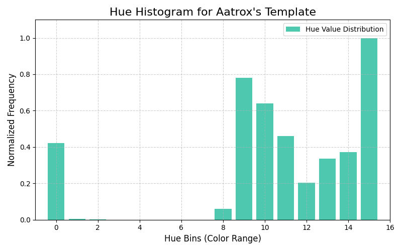
The plot shows Aatrox's color DNA: mostly deep reds (bins 0 & 15), some dark blues (bins 8-11), and no greens.I chose a simple 1D Hue histogram with 16 bins because it's computationally fast and creates a unique "color fingerprint" for each champion. This single check is the hero of the system, instantly crushing false positives by rejecting similarly shaped objects that don't share the same color DNA.
3.2 From "Maybe" to "Tracked" - Making Detections Stick
A single-frame detection can be a fluke. To prevent the overlay from flickering wildly, the system needs memory and state.
- The Candidate: A champion isn't officially "Spotted" the instant they're detected. They first enter a "Candidate" state. Only after being detected for 3 consecutive frames is the candidate promoted to a fully tracked champion. This system gracefully handles minor occlusions or single-frame detection misses.
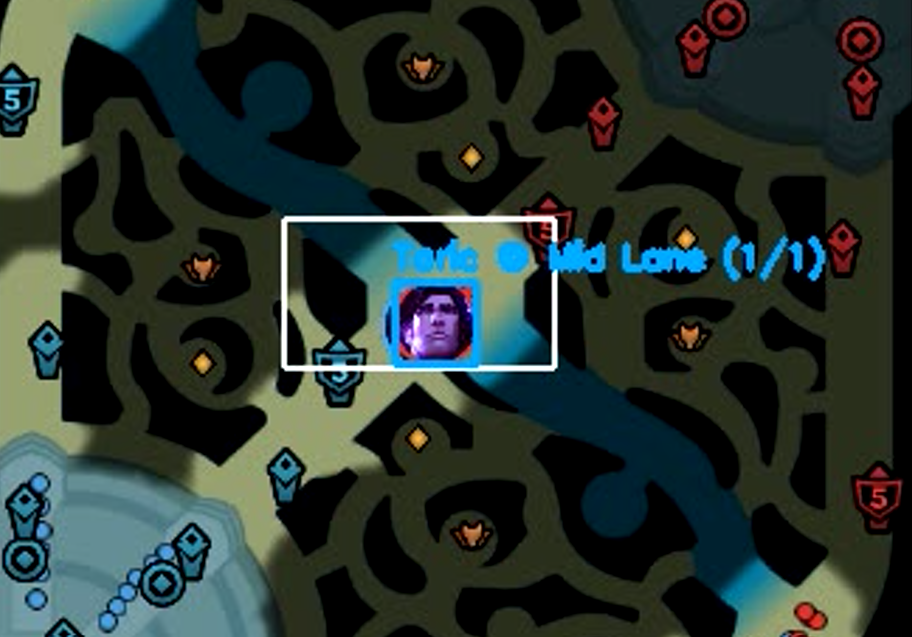
- The Tracker: Once a champion is confirmed, continuously re-scanning the entire minimap for them is inefficient. Instead, the system initializes a KCF object tracker on them (KCF is a really fast and efficient object tracking algorithm, and it's accurate enough for my use case). This tracker follows the champion's bounding box frame-to-frame, which is far more efficient. To prevent long-term drift, trackers are periodically reset after every 30 frames, forcing the system to re-validate the champion's position with the full detection pipeline.
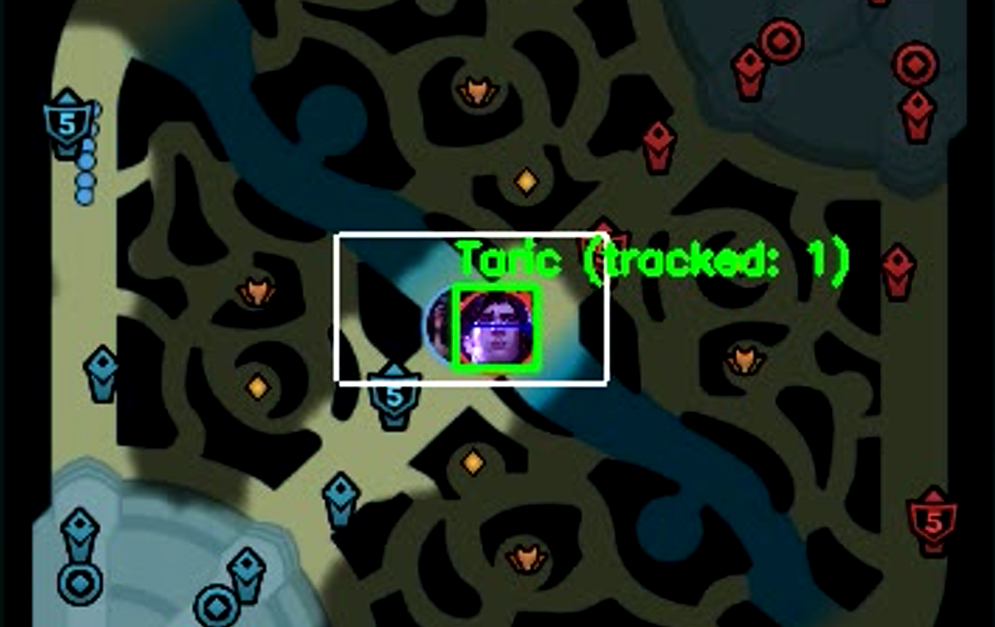
3.3 Turning "Where" into "What" - Positioning and Alerts
So far, the system can detect when an enemy champion appears on the minimap. But that alone isn't very useful. To provide real value, it must also determine and communicate where the enemy is—whether they're in mid lane, top lane, or roaming through the jungle.
-
Position Classification: The raw bounding box data is first mapped into a
normalized (0-1) coordinate space. From there, using simple
geometry and pre-defined regions, the system classifies the champion's position into
game-relevant zones like "Top Lane," "Bot River," or "Enemy Red Buff."
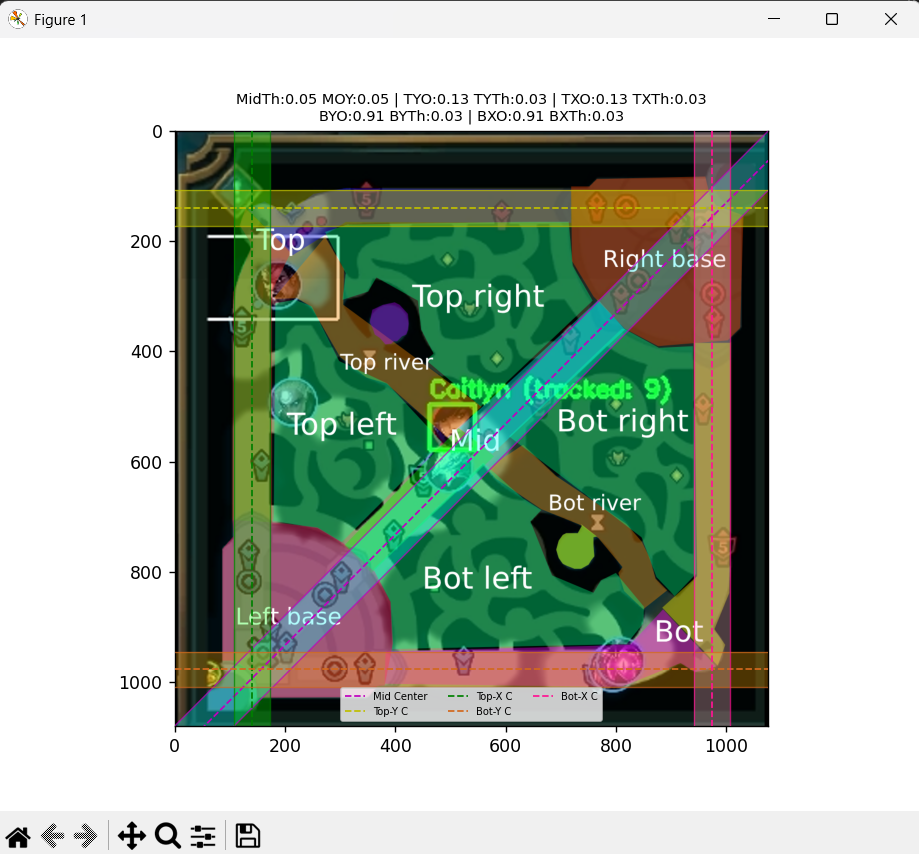
Pre-defined regions (it's a mess ik :D) -
Real-Time Notifications: Once the system knows both the what and the
where, it sends a structured JSON message to the front-end through the
WebSocketServer. To avoid overwhelming the player with redundant messages, it uses temporal filtering—only pushing an alert when a champion's state or general location has meaningfully changed.Here's an example of a WebSocket message sent when a champion is detected:
{ "champion": "Akali", "event": "champion_status", "position": "Mid Lane", "status": "spotted", "timestamp": 17521863450716066 }
4. The In-game Overlay: Making Data Visual
So, how do you safely draw on top of a live game without triggering its anti-cheat? You don't. You use a platform that the game developers already trust.
For this, I chose the Overwolf framework. It's a sanctioned platform for building in-game apps, which meant I could focus on the fun part: the UI. The overlay itself is built with web tech (HTML, CSS, & JavaScript) running in an Electron shell.
My C++ backend pushes JSON updates over a WebSocket, and the JavaScript in the overlay listens for those events to manage notifications. To keep the UI clean and prevent clutter, notifications are handled in a queue. Up to five recent events are stored, with each alert displaying on-screen for just **three seconds** before fading out. This ensures the player gets timely information without it becoming a distraction.
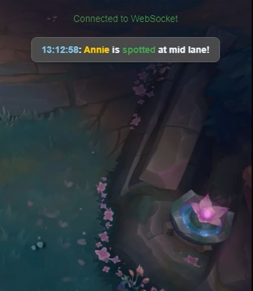
5. Conclusion
Welp, that's pretty much it! When you combine everything together, you get this:
5.1 Technical Challenges & Solutions
To sum up the technical challenges I faced while building Rift Recon:
-
Challenge: In-game lag.
Solution: A multi-threaded producer-consumer design. A dedicated capture thread (using DXGI) feeds frames to a separate processing thread, ensuring the heavy OpenCV work never blocks the capture loop. -
Challenge: Constant false positives from template matching.
Solution: A two-stage validation. After a shape match, a second check compares the 1D Hue histogram of the patch to the champion's "color fingerprint." No color match, no detection. -
Challenge: Object trackers slowly drifting off-target.
Solution: A hybrid approach. The fast KCF tracker handles frame-to-frame movement, but is reset every 30 frames to force a high-accuracy re-detection, correcting any drift before it becomes a problem. -
Challenge: Drawing an overlay without getting banned by anti-cheat.
Solution: Using the Overwolf platform. It's a sanctioned framework that lets me safely render a web-based (HTML/JS) UI on top of the game without modifying any game files. -
Challenge: Eliminating memory leaks and ensuring thread safety
Solution: Modern C++ techniques. By using smart pointers and following the RAII principle (Resource Acquisition Is Initialization), I can avoid manual memory management. Meanwhile, thread safety was handled by using atomic variables for simple state management. This combo eliminated most crash-prone bugs.
5.2 Limitations & Future Work
Like any V1.0, Rift Recon has a few quirks and areas for improvement. Here’s a quick look at the current challenges and my plans to solve them:
-
The "Sett" Problem:
He's occasionally hard to detect, likely due to his icon's color palette blending in.
Next Step: Fine-tune detection thresholds for him, or train a tiny, specialized CNN for tough cases. -
The Platform Limitation:
The app is Windows-only because it relies on the DXGI API for screen capture.
Next Step: Abstract the capture layer to support Linux (X11) and macOS (ScreenCaptureKit). -
The "Kayn" Problem:
His icon changes completely mid-game when he transforms, and my current system can't adapt.
Next Step: Make the template system dynamic. By listening to game events via the Riot API, the app could automatically swap to the correct red or blue Kayn icon.